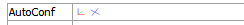
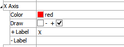
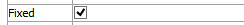
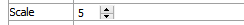
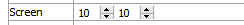
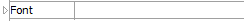

Axes Plot Item
Description
An axes that indicates the current orientation of the plot.
This plot item is interactive, which means it may be resized and positioned by clicking on it with the mouse. The axis may be fixed to a location on the screen, or to a real location in space.
Attributes
Autoconf
Select what type of axes should be rendered.
Autoconf: Display axes as either x, y axes or compass points using the icons shown (the images in the attribute field are buttons; click the desired icon to display the preferred axes type).
X Axis (and Y Axis and Z Axis)
Provides control over the color, extent, and labeling of the \(x\)-axis portion of the plot item (controls are the same for the \(y\)-axis and the \(z\)-axis).
Color: Specifies the color of the axis.
Draw: Specifies whether the positive, negative, both, or neither arm of the axis is rendered.
+ Label: Specifies the text for the label to apply to the positive axis arm.
- Label: Specifies the text for the label to apply to the negative axis arm.
Fixed
Determine whether axes position is fixed or set in model space.
Fixed: When checked, axes are fixed to a location on the screen (using the scale and screen attributes); when unchecked, the axes are positioned in model space (using the size and position attributes).
Scale
Size the plot item.
Scale: Sets the plot item size to the specified percentage of the program window’s size (see also the screen attribute).
Screen
Position the plot item.
Screen: Specifies the \(x\) and \(y\) position of the center of the plot item in screen coordinates (0, 0 = lower left corner of rendering area; 100, 100 = upper right corner). Also see the scale attribute.
Font
Set properties of the text used with the item. See the standard font control description for details.
Legend

Set item labeling in the plot legend. See the standard legend control description for details.
| Was this helpful? ... | UDEC © 2018, Itasca | Updated: Mar 15, 2024 |